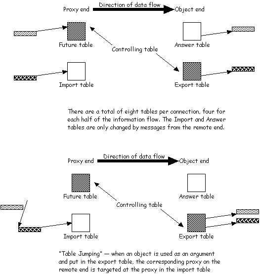

Last updated: [98/07/15 Bob]
Author: Bob Schumaker.
Introduction
The management of proxies in order to allow distributed garbage collection requires careful thought and planning. There are two levels of data flow that complicate matters, making it difficult to keep the design straight:
- The high level message flow, which travels from Proxies to Objects
- The underlying 'plumbing', where control flows in both directions, with one end being the 'master' for a given set of proxy-object connections.
It is further complicated by a duplicate set of data flow for proxy-object connections in the opposite direction.
The Life and Times of a Proxy
Proxies can be created on either end of a connection, but for the purposes of this walk through we will start with the creation of a proxy from a "Sturdy Reference" (my thanks to Mark Miller for the Indra terminology for the tables).
- A proxy is created using the Registrar ID and Swiss number of the remote object and placed in the 'Future' table using a 'weak reference'.
- A PROXY_REQUEST message is sent to the remote end.
- The object corresponding to the Swiss number requested is entered in the 'Answer' table.
- Messages are routed through the proxy to the remote object.
- On the remote end, and object is referenced as an argument to an E.send. The object is entered into the 'Export' table and a ProxiedObject is encoded over the wire.
\
- The ProxiedObject is decoded and a Proxy is created and entered into the 'Import' table using a 'weak reference'.
- If the new proxy points to the same object as one in the 'Future' table, the 'Future' proxy is set to point to the new proxy.
- Eventually, all references to the proxy are released and it is garbage collected. In its finalize routine, the proxy code schedules a Runner to initiate the distributed garbage collection.
- If the proxy is in the 'Futures' table:
- The entry is cleared.
- A PROXY_GARBAGE message is sent to the remote end.
- The remote end clears the matching table entry, removing a referene to the object (which might now also be garbage collected).
- If the proxy is in the 'Import' table:
- Its entry is not cleared (the swiss number is stored there)
- Instead, the weak reference is cleared and the PROXY_GARBAGE message is sent to the remote end, including a 'wire count'.
- The remote end checks the 'wire count' and, if they match, the table entry is cleared (removing a reference to the object).
- If the wire counts don't match, the table entry is left intact.
- A new proxy is created (using the information left in the 'Import' table) when the unaccounted for message arrives, and the process begines again.
- Eventually, the remote end will re-use the table entry, overwriting the previous value.
